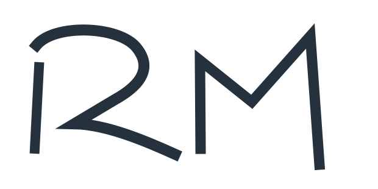

A rounded shoulder folds into a sharp point, then sweeps outward.
One continuous stroke carries both the R and the 2.
The lime follows the whole shared stroke, including the sweeping leg.
A tall, asymmetric M preserves the character of your drawing.